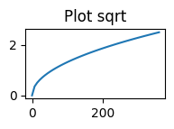
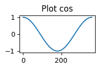
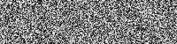

mkdocs-nbsync
-
Notebooks from Markdown Extend standard markdown syntax to automatically generate notebooks from documentation Markdown Features
-
Python File Integration Directly reference external Python files and reuse functions or classes Python Integration
-
Code Execution in Images Execute code within image notation for dynamic visualizations Dynamic Visualization
-
Dynamic Updates Real-time synchronization between notebooks and documentation Dynamic Updates
What is mkdocs-nbsync?
mkdocs-nbsync is an innovative MkDocs plugin that treats Jupyter notebooks, Python scripts, and Markdown files as first-class citizens for documentation. Unlike traditional approaches, mkdocs-nbsync provides equal capabilities across all file formats, enabling seamless integration and dynamic execution with real-time synchronization.
It solves common challenges faced by data scientists, researchers, and technical writers:
- Development happens in notebooks - ideal for experimentation and visualization
- Documentation lives in markdown - perfect for narrative and explanation
- Code resides in Python files - organized and version-controlled
- Traditional integration is challenging - screenshots break, exports get outdated
Inspiration & Comparison
mkdocs-nbsync was inspired by and builds upon the excellent work of two MkDocs plugins:
- markdown-exec - Provides utilities to execute code blocks in Markdown files
- mkdocs-jupyter - Enables embedding Jupyter notebooks in MkDocs
While these plugins offer great functionality, mkdocs-nbsync takes a unified approach by:
- Equal treatment - Unlike other solutions that prioritize one format, mkdocs-nbsync treats Jupyter notebooks, Python scripts, and Markdown files equally as first-class citizens
- Real-time synchronization - Changes to source files are immediately reflected in documentation
- Seamless integration - Consistent syntax across all file formats allows for flexible documentation workflows
- Image syntax code execution - Unique ability to execute code and embed visualizations anywhere Markdown image syntax (
) is valid, including tables, lists, and complex layouts
Acknowledgements
The development of mkdocs-nbsync would not have been possible without the groundwork laid by markdown-exec and mkdocs-jupyter. We extend our sincere gratitude to the developers of these projects for their innovative contributions to the documentation ecosystem.
Key Features
Notebooks from Markdown
Extend standard markdown syntax to define notebook cells within your documentation. Present code and its output results concisely with tabbed display.
```python .md#plot
import matplotlib.pyplot as plt
fig, ax = plt.subplots(figsize=(2, 1))
ax.plot([1, 3, 3, 4])
```
{#plot source="above"}
import matplotlib.pyplot as plt
fig, ax = plt.subplots(figsize=(2, 1))
ax.plot([1, 3, 3, 4])

Python File Integration
Directly reference external Python files and reuse defined functions or classes. Avoid code duplication and improve maintainability.
import matplotlib.pyplot as plt
import numpy as np
def plot(func):
x = np.linspace(0, 360)
y = func(np.radians(x))
fig, ax = plt.subplots(figsize=(2, 1))
ax.plot(x, y)
ax.set_title(f"Plot {func.__name__}")
if __name__ == "__main__":
# %% #sqrt
plot(np.sqrt)
{#sqrt source="on"}
plot(np.sqrt)

Code Execution in Images
Execute Python code directly within image notation and display the results. This enables easy placement of dynamic visualizations in tables or complex layouts.
| Sine | Cosine |
| :-------------------: | :-------------------: |
| {`plot(np.sin)`} | {`plot(np.cos)`} |
| Sine | Cosine |
|---|---|
 |
 |
Code Execution with markdown-exec Style Syntax
mkdocs-nbsync supports the markdown-exec style code blocks with the exec="1"
attribute as a compatible approach to code execution. While this syntax
is familiar to markdown-exec users, mkdocs-nbsync executes it through the
Jupyter Notebook engine instead, providing the ability to render diverse
MIME content types (HTML, SVG, images, etc.) directly in your
documentation. This enables richer and more complex outputs than
traditional execution methods.
```python exec="1" source="tabbed-left"
import numpy as np
from PIL import Image
x = np.random.randint(0, 255, (50, 200), dtype=np.uint8)
Image.fromarray(x)
```
import numpy as np
from PIL import Image
x = np.random.randint(0, 255, (50, 200), dtype=np.uint8)
Image.fromarray(x)

Dynamic Updates and Execution
Automatic synchronization between notebooks and documentation ensures code changes are reflected in real-time. View changes instantly in MkDocs serve mode.
Getting Started
Follow these steps to get started with mkdocs-nbsync: